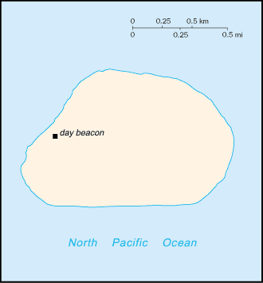
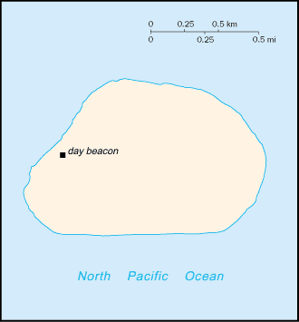

:: BAKER ISLAND
Geography :: BAKER ISLAND
-
fringing reef surrounding most of the island can pose a maritime hazardno natural fresh water resources
Government :: BAKER ISLAND
-
etymology: named after Captain Michael BAKER who visited the island in 1832 and again in 1839, when he claimed it for the United States